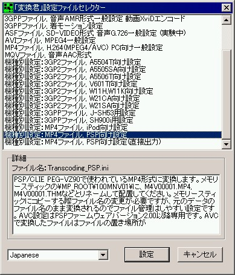
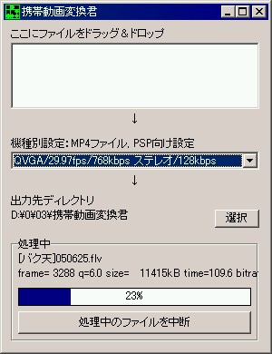

GoogleVideo to W-ZERO3
2006年1月1日 更新
目的
GoogleVideoをパソコン上に保存したものをW-ZERO3上にエンコードして再生できるようにします。
W-ZERO3で直接GoogleVideoを見る方法ではありません。
(1) 必要だと思われるもの
●携帯動画変換君（.FLV→.MP4エンコード用）
→ 3GP_Converter（MobileHackerz）
●TCPMP（多様なファイル形式に対応した動画プレーヤー）- Windows Mobile Player のARM版
●動画の入る容量の大きいminiSD
●ぼちぼち高速な回線
(2) 目的のGoogleVideoを探します
ちなみに、私はバク天のTV動画で試しました。
→スピードネーター:レイザーラモン住谷
GoogleVideoのコンテンツは爆発的に増えているみたいなので、便利に使えそうです。
(3) Google Video Downloader（海外サイト）からファイルの抽出を行う
下のどちらか好きな方のダウンロード先にアクセスしてください。どちらがいいのか、どんな差があるのかはわかりませんが、ダウンロード先その2の方が変換している人は少ないみたいです。理由はトップページの変換履歴がその1よりも少ないので。
→ （ダウンロード先その1）fM Google Video Downloader ver2.0 Final
→ （ダウンロード先その2）GVD BETA - Google Video Downloader
(4) ビデオダウンロード開始
アクセスしたところの2つ目の入力ボックス「Paste the link from Google and get the REAL link now:」に目的のGoogleVideoのURLを入力してDecode URLボタンを押すと、そのビデオが表示されます。
「Get it now ! [Watch] [ Download flv ]」と表示されているところの「Download flv」をクリックする
とvideoplaybackというファイルをダウンロードするダイアログが表示されます。このとき、ファイル名は変更してもしなくても構いませんので、とりあえずダウンロードします。時間はファイルによりますが、100MB以上あるファイルもごろごろしているので、ゆっくり待ちます。
(5) 動画エンコード
ゲットしたファイルは本来、拡張子が.FLVというFlashで使用される、動画ファイルです。これを携帯動画変換君に直接突っ込むだけで、あとは自動的にW-ZERO3で再生できるファイルの完成です。設定はPSPの設定がブロックノイズも少なく、程よい感じです。具体的な設定は以下の通りです。
まず、携帯動画変換君のSetup.exeを起動してエンコード形式の初期設定を行います。
「機種別設定：MP4ファイル, PSP向け設定」

Setup.exeの設定をしたら、次に3GP_Converter.exeを起動してエンコードを開始します。エンコード設定を合わせてます。
「QVGA/29.97fps/768kbps ステレオ/128kbps」

あとは、ダウンロードしたvideoplaybackをドラッグしてあげれば完了です。完成した.MP4ファイルをminiSDに転送するなり、無線LAN経由でパソコンから読み出せば動画を見ることができます。私の貧弱なPenIII 750MHzだとエンコードに20分くらいかかります。さらにminiSDに移し変える分もあるので、サクっと持ち歩くとまではいきません。
他の設定も試してみて、実際に再生もできたのですが、XviDや3GPPだとサイズが小さいのですが、見た目がかなり粗いです。W-ZERO3は1Mbps弱程度までは綺麗に再生できそうなので、この辺りが良さそうです。サイズは30分のテレビ番組でおよそ150MBくらいなので、1GBのminiSDならば2時間の映画2本入れられるくらいでしょうか。エンコード時間は結構かかります。良い設定方法があればご連絡いただければ幸いです。
【参考サイト】
■GoogleVideoをAviに変換する方法（ちょいろぐ！）
→ http://choiris.jugem.jp/?eid=12
■GoogleVideoの保存の仕方
→ http://10e.org/mt/archives/200511/260117.php
■スピードネーター:レイザーラモン住谷
→ http://blog.livedoor.jp/denpa_cat/archives/24135340.html
管理人：いわだら [ date18@gmail.com ]